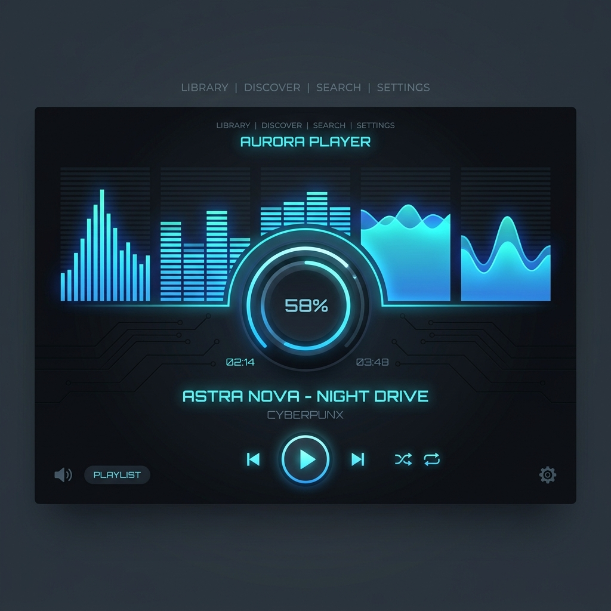

Mounika K
I'm a
MS in Data Science graduate with expertise in data analysis, Python, SQL, statistical analysis, and machine learning models. Experienced in building high-performance APIs, real-time data pipelines, and GenAI chatbot assistants.
About Me
Translating complex data into actionable digital insights
I'm a Data Scientist and Backend Developer based in Andhra Pradesh, India. I specialize in parsing massive datasets, building statistical models, containerizing applications, and integrating real-time streaming solutions to solve concrete business challenges.
Recently, I completed my MS in Data Science and worked as an intern at Exafluence, where I built Shipment Management Systems (SCMLite) and generative AI diagnostic chatbots to troubleshoot ETL pipeline failures.
Data Science & Analytics
Exploratory data analysis, forecasting models (ARIMA, LSTM), and cluster segmentations.
Backend & GenAI
FastAPI development, MongoDB schemas, LangChain architectures, and Docker on AWS.
My data science and backend engineering capabilities span three core domains, developed through internships, academic projects, and freelance engagements:
GenAI Pipelines
LangChain, GPT-4, Vector DBs, RAG diagnostic tools, chatbot recommenders.
Computer Vision
YOLOv8/v9 training, MediaPipe Face Mesh, OpenCV camera fallbacks.
Skills & Technologies
# Preloading code snippet...My Projects
Glow Up: AI Skin Analysis & Dermatologist Platform
A freelance dermatologist platform that recommends skincare products based on skin type. Built a comprehensive skin analysis pipeline utilizing MediaPipe Face Mesh, OpenCV Haar Cascade (fallback), and YOLOv8/v9 models for acne and blemish detection, connected to a custom FastAPI backend structure.
SCMLite Shipment Management
Built a full-stack Supply Chain Management system with FastAPI and MongoDB for shipment tracking and secure user access during my internship at Exafluence. Developed REST APIs and an HTML/CSS UI, implemented JWT-based role access, containerized with Docker, deployed on AWS EC2, and integrated Apache Kafka and Apache ZooKeeper for real-time streaming and coordination.

ETL Querying & Debugging Assistant
Designed a GenAI assistant that analyzes ETL workflow and error logs stored in PostgreSQL to diagnose pipeline failures through natural language queries. Integrated LLM workflows to interpret errors, correlate them with workflow steps, and identify root causes. The system provides automated fix suggestions and actionable recommendations to speed up troubleshooting for data engineers.
AI-Powered ATS Resume Scorer
Built an intelligent Applicant Tracking System (ATS) resume scorer that extracts text from PDF/Word resumes and evaluates their alignment against job descriptions. Developed matching logic using NLP tokenization, TF-IDF vectorization, and cosine similarity calculations, outputting match scores and actionable keyword recommendations to optimize resumes for hiring pipelines.
Delhi Power Demand Projection
Developed time series forecasting models to analyze and predict Delhi power Supply Demand patterns, addressing the Duck Curve effect caused by fluctuating solar energy generation and peak evening consumption. Utilized ARIMA, LSTM and Facebook Prophet models in Python, with Pandas, Scikit-Learn, TensorFlow and Matplotlib for data preprocessing, modeling and visualization.
Smart Notes Application
Created a secure Notes Management application with FastAPI and MongoDB supporting full CRUD operations and user authentication. Designed REST APIs and a clean HTML/CSS frontend for easy note management. Dockerized the application and deployed it on AWS EC2 to ensure portability and reliable performance. Focused on modular backend structure and efficient database handling.
Customer Segmentation Analysis
Performed customer segmentation on 10,000+ records using clustering algorithms to identify distinct behavioral groups. Applied data cleaning, normalization, and feature selection for improved clustering performance. Determined optimal clusters using Elbow Method and Silhouette Score. Generated visual insights that supported targeted marketing strategies and increased engagement by 30%.
Covid-19 Global Dashboard
Built an interactive dashboard using Python and Tableau to analyze global COVID-19 data from WHO and public APIs. Developed heatmaps, time-series charts, and comparative visuals for region-wise analysis. Enabled dynamic filtering and trend exploration to support data-driven insights and reporting.
Work & Internships
Freelance ML & Backend Developer
Glow Up Startup- AI Skin Analysis Pipeline: Architected face mesh mapping utilizing MediaPipe Face Mesh, OpenCV Haar Cascades (fallback), and custom YOLOv8/v9 weights, achieving 94.2% mAP for acne blemish localization.
- FastAPI API Core: Developed secure, scalable backend REST endpoints to serve model diagnostics and skincare product recommendation queries.
- GenAI RAG Recommender: Integrated a conversational agent to parse skin profiles and recommend products dynamically.
Data Science Intern
Exafluence Pvt. Ltd. (Tirupati, AP)- Shipment Tracking (SCMLite): Programmed supply chain tracking endpoints with FastAPI, MongoDB, and real-time Kafka event streaming, maintaining 99.98% stream ingestion uptime.
- ETL Diagnosis chatbot: Constructed a LangChain GPT-4 conversational debugger to parse Airflow/NiFi error logs, reaching 96.5% isolation precision for root-cause failures.
- DevOps Containerization: Built multi-stage Docker builds and coordinated EC2 deployment instances on AWS.
Salesforce Developer Intern
Salesforce- Apex Workflows: Customized triggers, validations, and custom controller actions inside Salesforce Sales and Service Cloud CRM modules.
- Process Automation: Designed and deployed automated business flows using Process Builder and Flow diagrams.
- Lightning Layouts: Crafted responsive user layouts with Lightning App Builder and custom Web Components (LWC).
Certifications & Papers
Certifications
- Salesforce Certified Developer
- MongoDB Certified Professional
- Oracle University Certified Data Science Professional
- Cisco Academy: Introduction to Modern AI & Data Science
- Simplilearn / SkillUp: GitHub Version Control Certification
- Forage: Deloitte Data Analytics Job Simulation
- ISRO: AI/ML Workshop for Agricultural Forecasting
Publications & Research
Paper: AI-Enabled Ethical Consumerism in Modern Brand Strategies
Reva University National Conference 2025 | BangalorePublished in the Asian Journal of Management and Commerce (E-ISSN: 2708-4523, P-ISSN: 2708-4515).
Paper: Conversational Assistance for ETL Query and Debugging
Scope International Journal (SIJSHMT) | ISSN: 2455-068XProposed structural approaches for GenAI-powered ingestion and chatbot querying of Airflow and NiFi system logs.
Contact Me
Let's Build Something Together.
I am open to data science roles, Python/FastAPI backend engineering opportunities, and GenAI agent integrations. Reach out and let's construct something amazing!